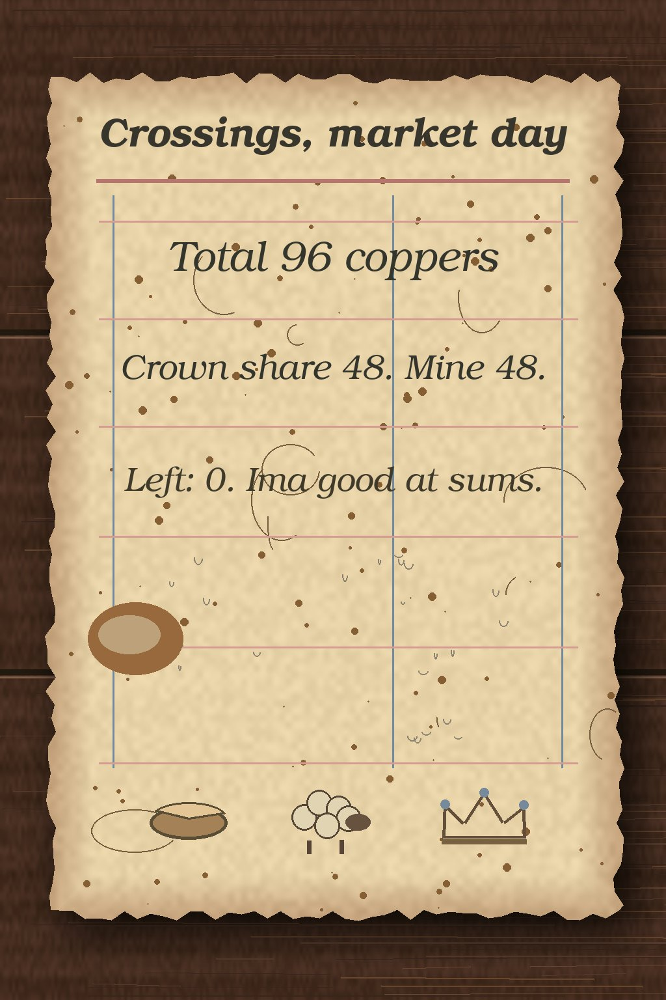

Crossings, market day. Foot 41 (41c). Riders 9 (18c). Carts 12 (36c). One goat (1c, he argued).
Total 96 coppers. Crown share 48. Mine 48.
Spent: pies 30c (Hobb’s), turnips 12c (Widow Ash), one sheep 6c (Mudda ate it, I paid it).
Left: 0. Ima good at sums.
Note to self: Gorrel tried on the tiara AGAIN. Thrask growled at the Dray boy. Mudda ate a sheep wot wasn’t ours. Must fix family. Six stones in the box. Still six. Counted.